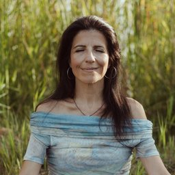
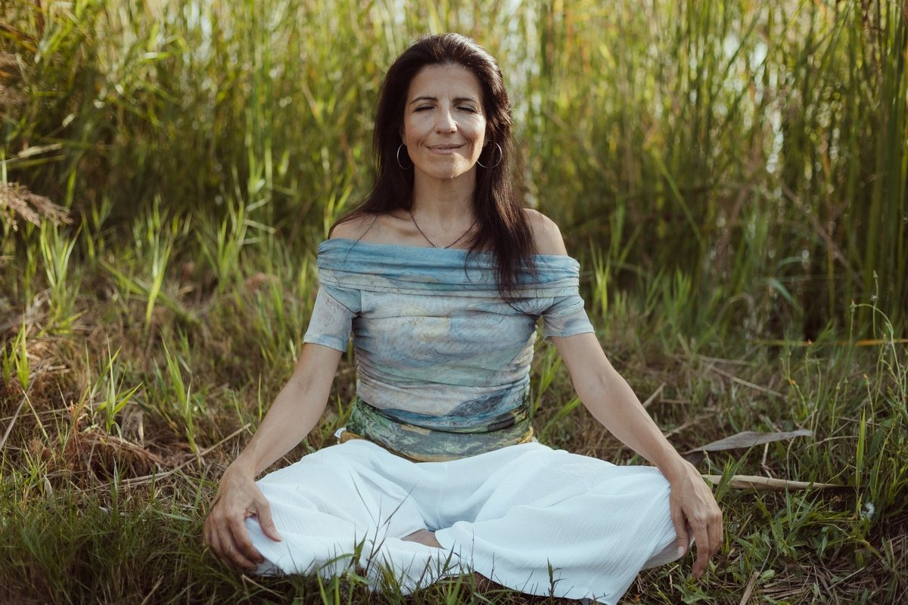

El viaje del héroe
Reconocerás tu momento vital actual: qué desafíos te trajeron hasta aquí y qué propósito oculto vive detrás de cada experiencia. Aquí aceptas el viaje y das el primer paso en este nuevo nivel.
La segunda etapa del camino alquímico. Un viaje de nueve portales guiado por Transi Aracil, psicóloga Gestalt.
La alquimia del alma comienza el día que recuerdas que siempre tuviste el poder de crear tu vida. Este proceso es la continuación natural de Recuentro con tu ser — un viaje de nueve portales para profundizar en quien ya eres más allá del miedo, del condicionamiento y del pasado.
✦ 80 personas han recorrido el camino ✦ 9 portales ✦ Acompañamiento semanal en vivo
Este programa es exclusivo para quienes ya completaron Recuentro con tu ser. Si todavía no diste el portal de entrada, comienza ahí. Cuando termines, esta puerta se abrirá.

Ya completaste Recuentro con tu ser y sentís el llamado a profundizar en el camino alquímico.
Deseas continuar el viaje de transformación interior, no empezarlo desde cero.
Estás lista para recordar tu poder creador —y eso te emociona y te asusta a la vez.
Buscas herramientas espirituales prácticas, con un marco psicológico serio que las respalde.
No has completado aún Recuentro con tu ser. Este programa es la profundización —si todavía no diste el primer paso, comienza por ahí.
Buscas una solución rápida o un atajo mágico.
Esperas resultados sin compromiso, sin presencia, sin práctica.
Solo te interesa el contenido grabado para "consumirlo" en cualquier momento.
Prefieres evitar la profundidad emocional y la rendición del ego.
Filtrar con respeto también es cuidarte. Si este no es tu momento —o si todavía no recorriste el portal de entrada—, honralo, y vuelve cuando lo sea.
Cada módulo es una llave. Cada experiencia, una activación. Construimos sobre lo ya integrado en Recuentro con tu ser.
Reconocerás tu momento vital actual: qué desafíos te trajeron hasta aquí y qué propósito oculto vive detrás de cada experiencia. Aquí aceptas el viaje y das el primer paso en este nuevo nivel.
Para crear algo nuevo es necesario soltar lo que ya no eres. Aprenderás a rendirte y soltar el control, el miedo y las viejas historias, permitiendo que la sabiduría del alma guíe el proceso.
Aprenderás técnicas para aquietar la mente, habitar el presente y escuchar la voz profunda de tu ser. Cuando la mente se calma, la manifestación se ordena.
Cuando confías en tu intuición, el camino se revela paso a paso. Reconocerás señales, tomarás decisiones desde el alma y caminarás con confianza aunque aún no veas el destino completo.
No manifiestas desde el deseo — manifiestas desde quien eres. Descubrirás cómo alinear pensamiento, emoción y energía para convertir tu intención en realidad.
Profundizarás en la relación energética con la vida: aprenderás a escuchar, pedir y recibir desde la coherencia interior. Cuando te alineas, todo conspira a favor.
Sanarás, integrarás y trascenderás — liberando juicios, culpas y resistencias. Desde el amor, la manifestación se vuelve natural y la vida fluye sin esfuerzo.
Todo lo que buscas ya vive en ti. Despertarás tu poder interno, reconocerás tu capacidad creadora y anclarás tu nueva identidad alquímica.
Integrarás todo lo aprendido. Definirás la vida que deseas crear desde tu verdad, aprenderás a sostener tu visión y darás pasos conscientes en coherencia con tu nuevo ser.

Transi Aracil es psicóloga Gestalt con años de práctica clínica y un camino propio de transformación interior que la llevó más allá del protocolo terapéutico. Combina la solidez de la psicología occidental con la profundidad de la tradición alquímica —sin jerga de gurú, sin espiritualidad de escaparate.
Este programa solo se abre a quienes ya completaron Recuentro con tu ser. Por eso la profundidad que se alcanza es la que es: construimos sobre lo ya integrado. No se trata de subir escalones a la ciega, sino de caminar conscientemente el tramo que sigue.
Su manera de acompañar es poco frecuente: presencia real, escucha sin juicio, y la convicción firme de que la transformación no se explica —se vive.
Profundizado la claridad y el propósito que ya asomaron en Recuentro con tu ser.
Sentido una conexión más íntima contigo, por encima del ruido externo.
Confiado en tu intuición para tomar decisiones desde ella, no desde el miedo.
Habitado una paz interior que no dependa de las circunstancias.
Creado tu vida desde el alma —no desde el deber, no desde la carencia.
Portal + meditación guiada disponible. Te sentás, escuchás a tu ritmo, integrás lo que resuene.
Sesión semanal en vivo con Transi y el grupo (90 min). Preguntas, práctica compartida, presencia.
Ritual de integración con lectura recomendada. Bajamos la experiencia a tierra.
Silencio contemplativo, escritura opcional y cierre de semana.
Las sesiones en vivo quedan grabadas para quienes no puedan asistir en tiempo real.
Si sentís que tu historia puede resonar con quien viene detrás, nos encantaría incluirla. Escríbenos.
9 portales de trabajo profundo — acceso completo, disponibles desde el inicio y a tu ritmo.
Meditaciones guiadas — una por cada portal, audio descargable.
Libro de acompañamiento en formato digital — lectura recomendada para cada semana.
Sesiones semanales en vivo con Transi y el grupo — 9 encuentros de 90 minutos, en horario a convenir.
Comunidad privada de personas en el mismo camino — todas ellas también pasaron por Recuentro con tu ser.
Cierre con rueda de vida personal — revisión final de tu vida concreta, no solo simbólica.
€ 1.111 € 1.333
Precio especial por pronto pago
Un solo pago para acceder al proceso completo de Alquimia del Alma.
El precio incluye los 9 portales de trabajo profundo, las meditaciones guiadas descargables, el libro digital de acompañamiento, las 9 sesiones semanales en vivo con Transi y el grupo, el acceso a la comunidad privada y el cierre final con rueda de vida personal.
[POLITICA-DEVOLUCION]
Confiamos en que este proceso resuene contigo. Si después de los primeros días sientes que no es tu momento, queremos que tengas la libertad de volver atrás.
Sí. Este programa es la segunda etapa del camino alquímico. Solo accede quien ya completó Recuentro con tu ser (o un proceso equivalente validado con Transi). Si todavía no diste el portal de entrada, empezá por ahí —y cuando lo termines, esta puerta se abrirá.
El proceso completo se vive en nueve semanas, con sesiones semanales en vivo.
La cohorte comienza el [FECHA-INICIO]. Las inscripciones cierran el [FECHA-CIERRE-INSCRIPCION].
[CUPOS] personas por cohorte, para sostener la profundidad del acompañamiento.
Más allá del prerrequisito (Recuentro con tu ser), no. Solo disposición interna para el nivel de profundidad que propone esta etapa.
Sí. Es 100% online. Las sesiones en vivo se graban para quienes no puedan asistir en tiempo real.
Tarjeta, Bizum o transferencia bancaria. El acceso completo se activa dentro de las siguientes [TIEMPO-RESPUESTA] hábiles tras validar el pago.
Al activar el acceso, recibes un correo con las credenciales de la plataforma, las meditaciones, el libro digital y el calendario de sesiones en vivo.
"La alquimia no transforma el mundo. Transforma tu conciencia, y el mundo responde. Si ya diste el primer paso, sabés que todo comienza dentro de ti."
✦ Reservar mi lugar